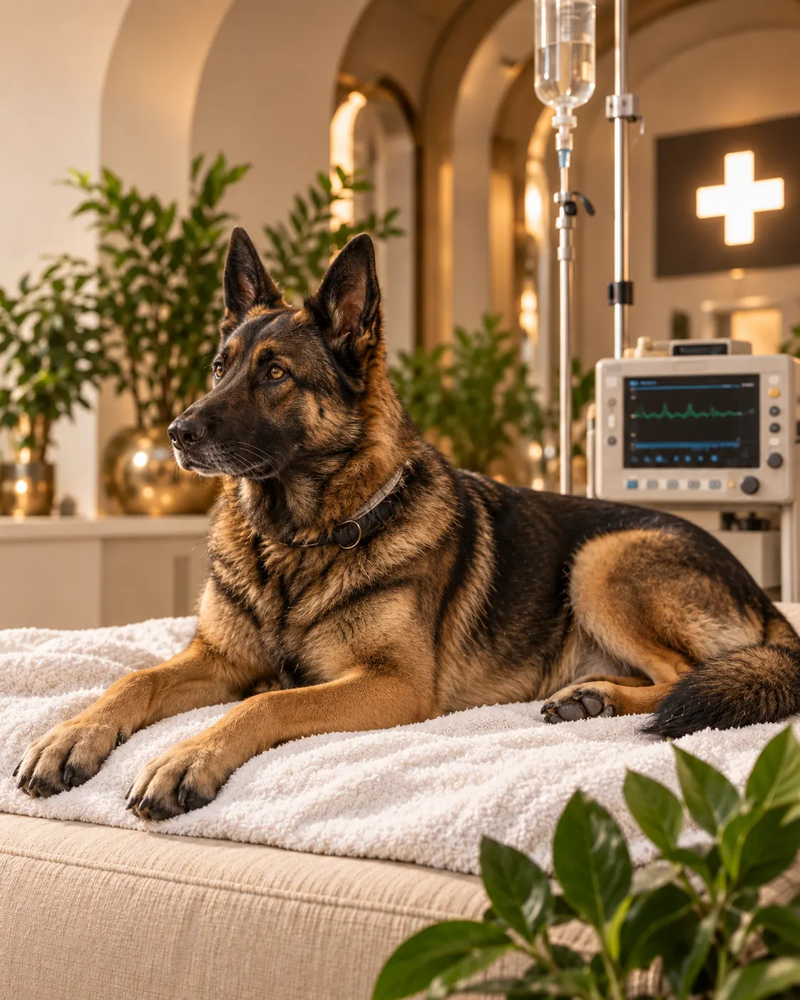

Nonstop péče
Pohotovost
Jsme tu, když se to nejvíc počítá.
Akutní veterinární péče mimo běžnou ordinační dobu. Pomáháme při náhlých stavech, úrazech a život ohrožujících situacích.
- Úrazy a nehody
- Náhlé zdravotní komplikace
- Kolapsy a intoxikace
- Akutní chirurgické stavy
